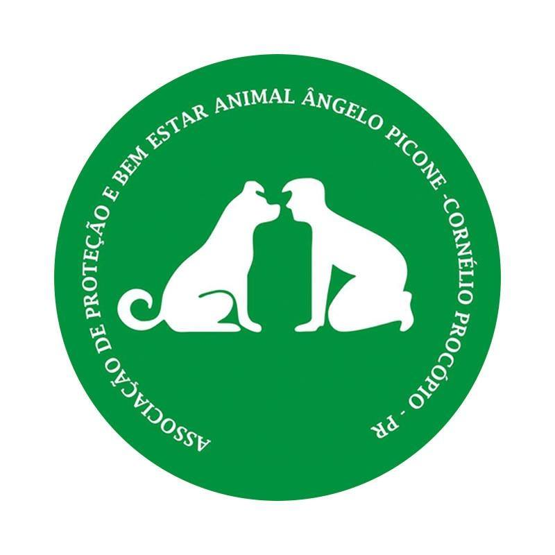
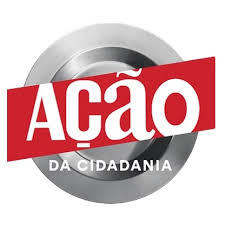
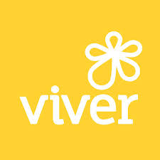
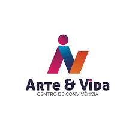
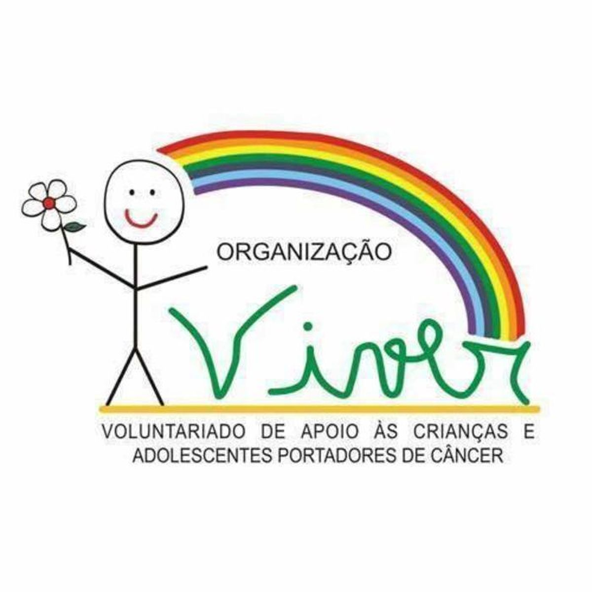
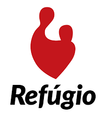
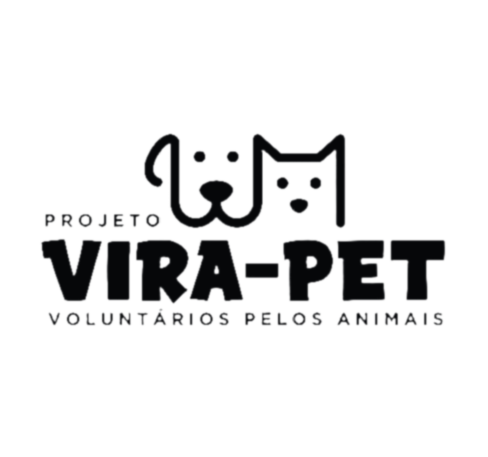

A ONG adota a Missão Integral, que busca viver a fé em Jesus
Cristo de forma unificada em todas as áreas da vida. Segundo a
Declaração da Rede Miquéias, evangelismo e ação social não são
separados, mas interconectados. A missão é integrar o cuidado com
o próximo e o testemunho da graça de Cristo, promovendo justiça e
transformação espiritual, material e estrutural.A organização
acredita que a fé deve impactar todas as dimensões da vida, assim
como exemplificado por Jesus.

Proteção e Bem Estar Animal - Angelo Picone
A Associação Angelo Picone é uma organização não governamental e
sem fins lucrativos dedicada ao cuidado e proteção dos animais.
Com esforços independentes, a ONG trabalha para acolher, tratar e
promover o bem-estar dos animais, contando com a colaboração da
comunidade para continuar suas atividades filantrópicas.

Ação da Cidadania
A Ação da Cidadania, fundada por Herbert de Souza (Betinho) em
1993, é um movimento social voltado para combater a fome e a
miséria no Brasil. Com uma rede de mobilização nacional formada
por comitês locais e lideranças comunitárias, a ONG busca apoiar
os 32 milhões de brasileiros em situação de extrema pobreza.
Hospital de Amor
Com mais de 60 anos de história, o Hospital de Amor é reconhecido
internacionalmente pela excelência em tecnologia e cuidado
humanizado. Considerado o maior polo de tratamento oncológico
gratuito da América Latina, oferece exames preventivos gratuitos,
suporte completo a pacientes e familiares, e promove a produção
científica por meio do Instituto de Ensino e Pesquisa (IEP).

Viver
A Organização Viver foi fundada em 2001 por quatro voluntários e,
há mais de 23 anos, oferece apoio social e bem-estar a crianças e
adolescentes com câncer. A instituição surgiu a partir da
identificação de necessidades além da recreação, proporcionando um
espaço dedicado para acolher e oferecer suporte às crianças e suas
famílias durante o tratamento.
SOS Vida Animal
A SOS Vida Animal, fundada em 1989, atua em Londrina e região com
o apoio de voluntários dedicados à causa animal. A organização não
acolhe animais, mas promove o bem-estar de cães e gatos por meio
de eventos de adoção e campanhas de conscientização.

Centro de Convivência Arte & Vida
O Centro de Convivência Arte & Vida é uma organização sem fins
lucrativos que promove inclusão social por meio de atividades
culturais, esportivas e complementares à educação, oferecendo um
espaço para convivência, desenvolvimento de protagonismo e
autonomia, respeitando as faixas etárias dos beneficiários.
Instituto das Sedas
O Instituto Sendas é uma ONG composta por migrantes de diversos
países e brasileiros residentes em Maringá, Sarandi e Marialva
(PR). Seu foco é empoderar migrantes e refugiados, aproveitando
seus talentos e experiências para promover a integração e melhorar
suas condições de vida no Brasil.

ONG Viver
A ONG Viver é uma instituição voluntária, fundada em 1997, que
apoia as crianças com câncer e suas famílias em busca de
tratamento contra a doença em Londrina. Atualmente atendem 151
crianças e adolescentes.

Refúgio
A Associação Refúgio, fundada em 2000 em Cambé-PR, promove a
proteção e desenvolvimento de crianças e adolescentes em situação
de vulnerabilidade social por meio de oficinas culturais,
esportivas e socioeducativas. Com sede própria e profissionais
qualificados, atua na prevenção de violência e riscos sociais,
impactando a região norte de Cambé e sua comunidade.

Vira Pet
O projeto Vira Pet, ativo desde 2016 em Maringá-PR, resgata cães e
gatos abandonados, oferecendo cuidados veterinários, castração e
preparo para adoção responsável. Atuando com voluntários, promove
transparência, respeito e tratamento digno aos animais, buscando
lares seguros para eles.
SOCPAM
A SOCPAM é uma ONG que resgata, cuida e promove a adoção
responsável de cães, oferecendo abrigo e atendimento veterinário.
Nosso objetivo é encontrar lares amorosos para os animais e
conscientizar sobre a importância da adoção responsável.